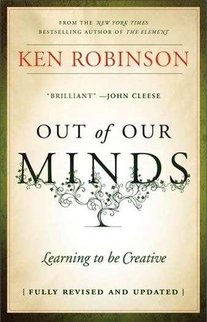
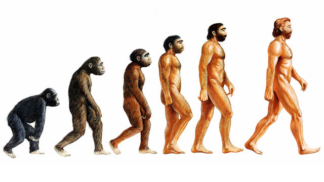
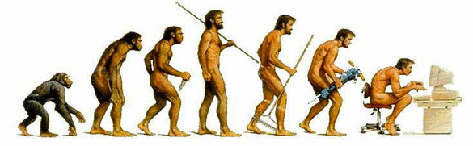
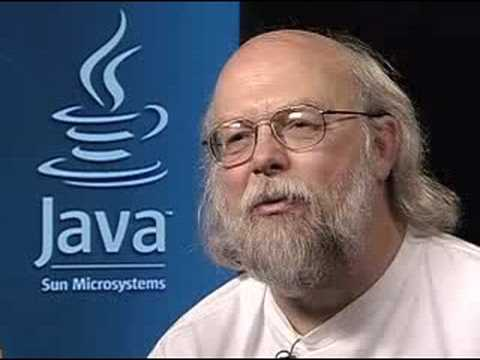
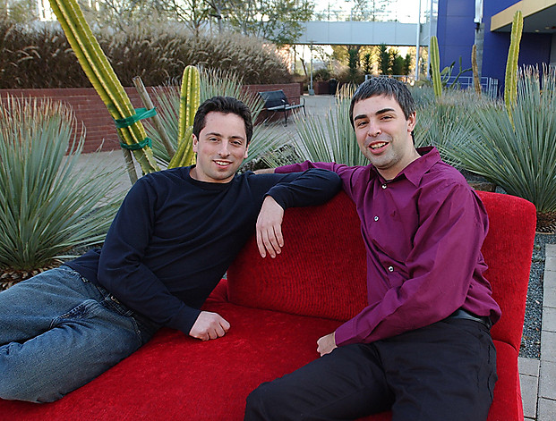

Óscar Belmonte Fernández.
Despacho TI1203DD.
Página web: http://www3.uji.es/~belfern
Correo electrónico: oscar.belmonte@uji.es
Tutorías
Lunes: 12:00 a 13:30
Martes: 12:00-13:30
Óscar Belmonte Fernández.
Despacho TI1203DD.
Página web: http://www3.uji.es/~belfern
Correo electrónico: oscar.belmonte@uji.es
Tutorías
Lunes: 12:00 a 13:30
Martes: 12:00-13:30
Asignatura obligatoria.
Segundo curso. Segundo semestre.
6 créditos (150 h.) → 60 presenciales, 90 NO presenciales.
Tal y como aparece en el sia
Programación I: Definición de clases, acceso a ficheros de texto.
Programación II: Introducción a la POO, entrada/salida.
Estructura de datos: Colecciones, genéricos.
Programación Avanzada
Cualquier otra asignatura que implique programación.
Teoría
Prácticas
Teoría:
Presentación de conceptos teóricos.
Resolución de ejercicios.
Prácticas:
Desarrollo de un proyecto.
La presentaciones y código de ejemplo están en el github de la asignatura
Haz un fork del repositorio a tu cuenta.
Si no tienes cuenta en github, debes creártela de inmediato. Git y github son herramientas increíbles para la gestión del control de versiones.
Si encuentras algún error o errata, corrígelo y hazme un pull request.
git es una excelente herramienta para el control de versiones. Si no lo haces ya, debes empezar a usarla de inmediato.
En este vídeo se presentan las instruciones git más comunes.
Los contenidos del curso centralizados en aulavirtual.
Bibliografía básica:
Bibliografía complementaria:
| Evaluación continua | Revión de tres entregas de prácticas. | 40% |
| Evaluación de prácticas | Entrega final del proyecto revisado. | 20% |
| Examen | Prueba escrita | 40% |
Criterio de superación de la asignatura:
Para aprobar la asignatura es necesario obtener 5 o más puntos sobre 10 en el promedio ponderado de esas tres partes, con los pesos indicados anteriormente (que vienen establecidos en el plan de estudios). Además, se exige una nota mínima de 4 en el examen final para aprobar la asignatura; no se exige ninguna nota mínima ni en la evaluación continua, ni en la evaluación continua de prácticas. Si la nota del examen final es mayor o igual que 4, la nota final en actas será la nota media ponderada. Si la nota del examen final es menor que 4, la nota final en actas será el mínimo valor entre la nota media ponderada y 4.
Criterio de superación de la asignatura:
Constarán en actas como presentados en cada convocatoria aquellos alumnos que se presenten al examen final correspondiente. Los estudiantes que hayan realizado pruebas de evaluación continua de teoría y/o de prácticas pero no se presenten al examen, figurarán en actas como «No Presentado».
En la segunda convocatoria del curso no será posible mejorar las notas de evaluación continua. Solamente se realizará un nuevo examen final, cuyo peso seguirá siendo el 40% de la nota final, y se entregará la práctica, cuyo peso seguirá siendo el 20% de la nota final. El restante 40% de la nota en la segunda convocatoria estará formado por la nota de la evaluación continua que no es recuperable en segunda convocatoria.
Evaluación prácticas.
| Evaluación continua (40%) | ||
| Práctica 0 | No puntúa. | |
| Práctica 1 | Apta / NO Apta | 0.8 puntos. |
| Práctica 2 | Apta / NO Apta | 0.8 puntos. |
| Práctica 3 | Apta / NO Apta | 1.2 puntos. |
| Práctica 4 | Apta / NO Apta | 1.2 puntos. |
| Evaluación continua de prácticas (20%) | ||
| Entrega final (Revisión de P1+P2+P3+P4) | Hasta 2 punto. | |
| TOTAL PRÁCTICAS | Hasta 6 puntos. | |
Examen de teoría (40%)
| Primera convocatoria | 26/5/2023 |
| Segunda convocatoria | 26/6/2023 |
Échale un vistazo a este Bring on the learning revolution.
Lee con detenimiento el siguiente fragmento de código:
int[] res() {
int[] r = new int[2];
for(P p: ps)
if(p.s.equals("a"))
r[0]++;
else if(p.s.equals("b"))
r[1]++;
return r;
}
... e intenta adivinar qué hace.
Lee ahora este método:
ContadorSexos cuentaPersonaPorSexo() {
ContadorSexos contador = new ContadorSexos();
for(Persona persona: personas) {
if(persona.isHombre())
contador.incrementaHombres();
else if(persona.isMujer())
contador.incrementaMujeres();
}
return contador;
}
¿Qué hace?
Si, los dos métodos hacen lo mismo.
Ante todo, una actividad muy creativa.
Échale un vistazo a este libro.

¿Pero de verdad que no hace falta una creatividad enorme para descubrir la teoría de la relatividad?

¿O la teoría de la evolución de las especies?

¿O la teoría de la evolución de las especies aplicada a la informática?

Pero claro, los informáticos no somos fashion.

¿O si?

En cualquier caso, para reirse, lo mejor son los físicos.